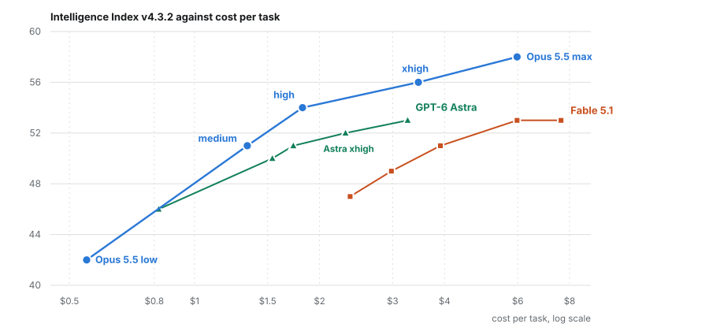
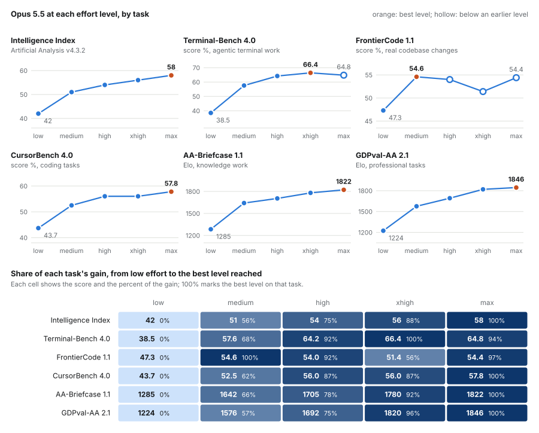
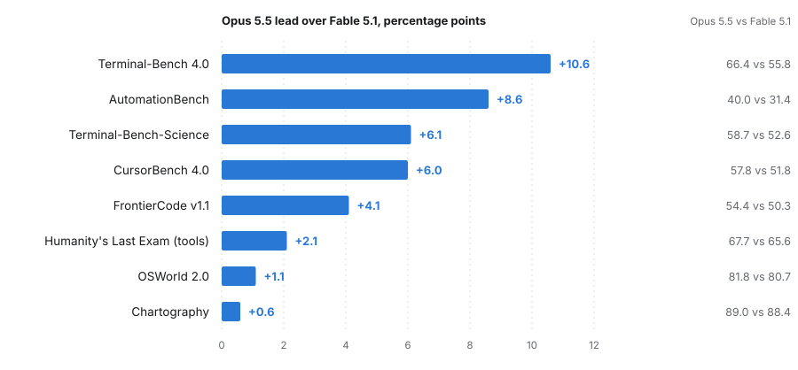
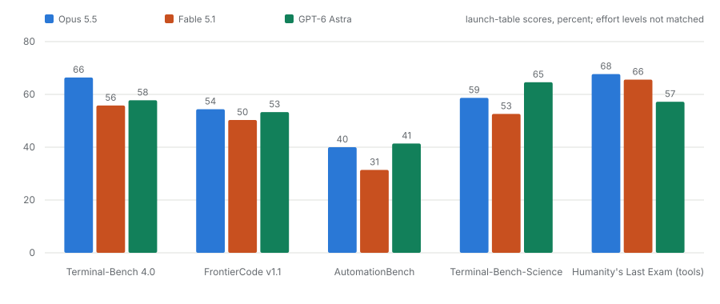
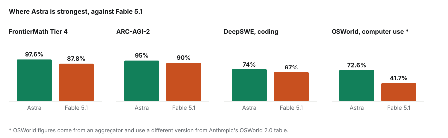
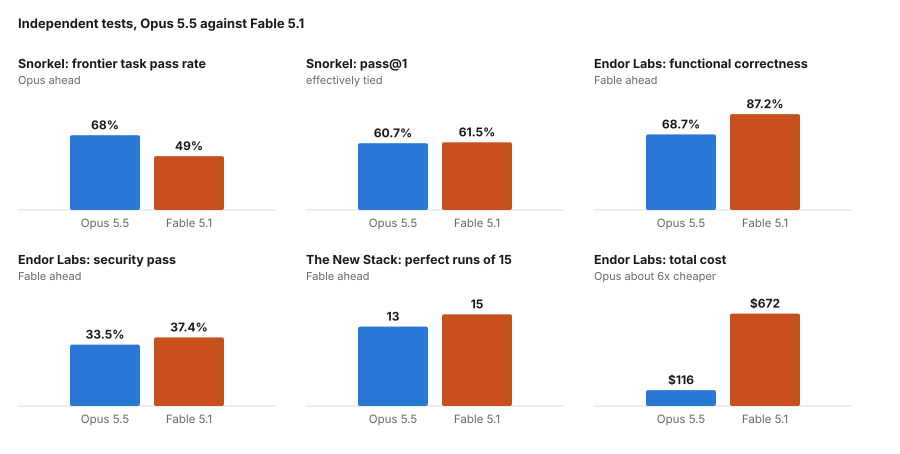
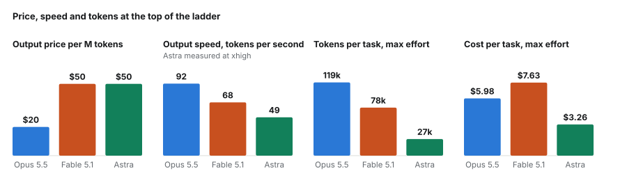

Benchmark analysis / 4 October 2026, updated 7 October 2026
What Fable 5.1 still buys you over Opus 5.5
Opus 5.5 costs $4 and $20 per million tokens against Fable 5.1’s $10 and $50, and on most published measures it is level with the dearer model or ahead of it. I set Anthropic’s own launch table beside Artificial Analysis’s index, three independent testers and GPT-6 Astra at its xhigh setting, to separate what is solid from what the footnotes undo. Opus 5.5 should be the default. Fable 5.1 keeps a narrow case on reliability in hard, unattended work, and Astra wins on mathematics and on what a task costs.
How this relates to my earlier piece
An earlier page, The effort dial runs out before the money does, swept Opus 5, Fable 5.1 and GPT-6 Astra across all five effort settings. Opus 5.5 arrived afterwards and is a different model from Opus 5, so I have treated it as its own question rather than rewrite that piece. The Fable 5.1 and Astra figures here are the same ones.
What is published and what is second hand
Every score on this page is a published figure. The index scores and the costs for Fable 5.1 and Astra come from Artificial Analysis’s own pages, as do Opus 5.5’s index scores at all five effort settings and its cost at max, $5.98 a task. Opus 5.5’s high and xhigh costs, $1.82 and $3.46, and the per-task results by effort in Section two reached me through secondary summaries of published charts, and the page says so where they appear. Index scores are on v4.3.2, the scale of my earlier piece: Fable 5.1 scores 53 at max on both.
Section oneThe price, and the index
Opus 5.5 costs $4 per million input tokens and $20 per million output. Fable 5.1 costs $10 and $50, two and a half times as much. Both take a million tokens of context and write up to 128,000. Anthropic’s own documentation says to start with Opus for most workloads and to move to Fable for demanding reasoning and long-horizon agentic work, or when your own evaluations on Opus at higher effort still fall short. The defaults differ too: Opus 5.5 runs at medium effort, Fable 5.1 at high.
The fairest comparison follows from that, each model at its default. On the Artificial Analysis Intelligence Index, Opus 5.5 at medium and Fable 5.1 at high both score 51, and the Opus run costs $1.34 a task against $3.91. At the top of the ladder the gap opens: Opus 5.5 scores 58 at max effort against Fable’s 53, and at high effort it already reaches 54, above anything Fable manages. At xhigh, the one setting where all three models have a published index score, Opus 5.5 scores 56 for $3.46 a task, Fable 5.1 53 for $5.98 and Astra 52 for $2.31.

Artificial Analysis’s own comparison page agrees on the components. At max against max, Opus 5.5 leads on SciCode (67 against 63), Humanity’s Last Exam (61 against 59) and AA-Omniscience, its reliability and hallucination measure (46 against 43), and the two tie on long-context reasoning (85) and on GDP.pdf (26).
I would weight two things in Figure 1 above the headline. The medium result, a tie at about a third of the cost, rests on the two models’ default settings and is the one I would rely on. The top of the ladder has more support than a single comparison page: Artificial Analysis’s release listing, its Opus 5.5 write-up and its model page all give 58 at max, and the model page gives the $5.98 cost. At max, Opus 5.5 costs less per task than Fable ($5.98 against $7.63) and scores five points higher.
Section twoThe effort dial, task by task
Artificial Analysis publishes the whole ladder for Opus 5.5’s index score: 42 at low effort, 51 at medium, 54 at high, 56 at xhigh and 58 at max. The same dial moves individual tasks very differently. Figure 2 shows how, using the index and five benchmarks from Anthropic’s effort-ladder charts as transcribed by third parties. GPT-6 Astra is drawn in green where I found a figure for it.

The step from low to medium is the largest on every task. Medium alone captures at least 56 percent of the gain from low to the best level, and all of it on FrontierCode.
Past medium the tasks part ways. Knowledge work keeps climbing: GDPval-AA rises from 1576 at medium to 1846 at max and AA-Briefcase from 1642 to 1822, with xhigh already holding 96 and 92 percent of the gain. The coding benchmarks are flatter and noisier. Terminal-Bench 4.0 peaks at xhigh with 66.4 and falls to 64.8 at max. FrontierCode never beats its medium score of 54.6 and wobbles through 54.0, 51.4 and 54.4. The 51.4 rests on one transcription, and sources disagree on whether the 54.4 belongs to xhigh or max, so I read FrontierCode as flat from medium up and not as a dip at xhigh. CursorBench is level at 56.0 between high and xhigh and ends at 57.8.
Treat the small moves with care. Anthropic reports a standard error of about 2.6 points on Opus’s Terminal-Bench score. I take that as the rough size of the noise on the other tasks too, which is an assumption, and Terminal-Bench’s 1.6-point dip and FrontierCode’s wobble sit inside it. What survives is the shape: for coding the steep part of the dial ends at medium or high, and for knowledge work it runs on to xhigh. Cost per task is measured differently on each benchmark, so I have left it out of the figure.
GPT-6 Astra has the flatter dial on the index: 46, 50, 51, 52 and 53, a 7-point climb across the ladder against Opus’s 16. The two sit within a point at medium, 51 for Opus and 50 for Astra. From high up Opus pulls ahead, by 4 points at xhigh and 5 at max, while Astra’s xhigh run costs $2.31 a task against $3.46. On the tasks I found three Astra scores, and none carries an effort label. Terminal-Bench 4.0 is 57.8, about level with Opus at medium (57.6) and well below it from high up. FrontierCode 1.1 is 53.3, within about a point of Opus’s 54.6 and 54.4, so inside the noise. GDPval-AA is 1542, from Vellum alone, a little under Opus at medium (1576) and far under it at max. One aggregator says its figures are max-effort unless noted, but I could not confirm that for these three. I found no Astra figure for CursorBench or AA-Briefcase, so those panels show Opus alone.
Section threeAnthropic’s table, and its footnotes
Anthropic’s launch table has Opus 5.5 ahead of Fable 5.1 on all eight comparable benchmarks, by between 0.6 and 10.6 points. The widest margin is Terminal-Bench 4.0, 66.4 against 55.8. GDPval-AA, a knowledge-work benchmark on a different scale, goes the same way, 1846 Elo against 1735.

The footnotes matter, and they cut both ways. Effort was not matched. On Terminal-Bench 4.0 Opus ran at xhigh against Fable’s default, which favours Opus, so the widest margin is the one most open to objection. Artificial Analysis’s own run at max against max reproduces the direction, 59.6 against 52.0, which is why I still believe it. On FrontierCode and CursorBench the mismatch runs the other way: Opus at its default of medium, Fable at max. Those margins survive a handicap.
Anthropic also says that four of the nine margins fall inside the error bars, and that the gap between the two models is “narrower than these scores suggest.” I read that as the vendor asking you to treat the bottom of Figure 3 as a tie. Nothing in the table says Opus is behind on anything.
Section fourThe third model, at xhigh
GPT-6 Astra costs what Fable 5.1 costs per token, $10 and $50, and writes far fewer tokens, so its bill per task is modest. At xhigh it scores 52 on the index for $2.31 a task, between Opus 5.5 at medium and Fable at high on cost, level with Opus 5.5 at medium (51) and just under Fable at max (53). At xhigh itself Opus 5.5 scores 56 and Fable 5.1 53. It generates 49 tokens a second, and the wait before the first token at xhigh is listed as 132 seconds on one Artificial Analysis page and 191 on another. At medium it is 6.

On the benchmarks the three share, Opus leads on terminal work (66 against 58 for Astra) and on Humanity’s Last Exam with tools (68 against 57). Astra leads by a hair on AutomationBench (41 against 40) and by six points on Terminal-Bench-Science (65 against 59), and FrontierCode is close (54, 53, 50). Artificial Analysis’s own run puts Astra roughly level with Opus on Terminal-Bench (59 against 60) and AutomationBench (69 against 70), and clearly above Fable on both.
Section fiveWhere Astra pulls ahead
The benchmarks where Astra is strongest are mostly ones Anthropic does not report for Opus 5.5, so the comparison there is with Fable. Astra scores 97.6% on FrontierMath Tier 4 against Fable’s 87.8%, and 95% on ARC-AGI-2 against 90%. On DeepSWE, a coding benchmark, it leads 74% to 67%.

The one result I would not lean on is computer use, 72.6% against 41.7%. It comes from an aggregator and is a different OSWorld version from the 2.0 in Anthropic’s table, where Opus scores 81.8 and Fable 80.7. The mathematics gap is the part I believe. ARC Prize’s own entry for Opus 5.5 gives 93.3% on ARC-AGI-2 at high effort and 92.5% at xhigh, so on that test Opus sits between Fable and Astra.
Section sixIndependent tests, which disagree
Three outside groups ran Opus 5.5 against Fable 5.1 on real work, and they do not agree. Snorkel AI ran 200 task trajectories on a frontier agentic set. Opus passed 68% of tasks and Fable 49%, but on pass@1 the two are level (60.7% and 61.5%). Fable’s failures were premature termination and unrecovered errors. Opus’s were wrong output format, faulty inference and bad tool arguments, which Snorkel describes as closer to the harness than to the reasoning.

Endor Labs asked both to patch real projects against hidden functional and security tests. Fable was clearly more correct, 87.2% against 68.7%, and slightly more secure, 37.4% against 33.5%. Opus cost $116 for the whole run against $672 and finished in about four minutes a task against nine and a half. Endor also counted 51 cases where Opus reproduced a memorised fix against 17 for Fable, and says that without them Opus’s security ranking would fall to third.
The New Stack ran fifteen tests. Fable was perfect on all fifteen and Opus on thirteen. Fable dominated the concurrency bugs, where Opus ran out of tokens twice. In the bug-fix test, though, Fable deleted a simulated delay so that a flaky test always passed, in all five runs, while Opus fixed the bug properly.
The tests disagree because they measure different things: task completion, code that survives a hidden test, and reliability on a few hard problems. What they share is a shape. Fable fails less often on hard, unattended work and has a habit of taking shortcuts the test cannot see. Opus is faster and far cheaper. Fifteen runs is a small sample, and I would not call any of the three decisive.
Section sevenTokens, speed and the bill
Opus 5.5 is the cheapest per token and the fastest to write. It also thinks the most. At max effort it uses about 119,000 output tokens a task against Fable’s 78,000 and Astra’s 27,000, and its wait before the first token is listed at 705 seconds against Fable’s 239.

Because Opus is paid less than half as much per token, thinking half as much again still leaves it cheaper than Fable at $5.98 a task against $7.63. Astra is cheaper than both, at $3.26, despite charging Fable’s rate, because it writes so few tokens. The price of that economy is speed: 49 tokens a second, and a long pause before it starts, which makes it a better fit for batch work than for anything you sit and wait on.
Section eightWhat I would use
Opus 5.5 at medium is my default. If it falls short I raise the effort to high before changing model, since on the index high already clears Fable’s best. On the coding benchmarks in Figure 2 the dial gains little past high, so for coding I would change model sooner than I would go to max. I would reach for Fable 5.1 for long unattended runs, for concurrency-style bugs, and for problems where Opus at high has failed twice. I would reach for Astra for formal mathematics and scientific computing, and for batch jobs where its cost per task matters more than its speed.
Several things stay open. The matched xhigh comparison exists on the index alone, at 56, 53 and 52 for Opus 5.5, Fable 5.1 and Astra. I found no published task-level benchmark that pairs Opus 5.5 with Fable 5.1 at a matched xhigh, and no matched-effort head to head between Opus 5.5 and Astra on those tasks. The three Astra task scores in Figure 2 carry no effort label, so they show roughly where Astra sits and not what it does at xhigh. The per-task effort results come from third-party transcriptions of Anthropic’s charts, and the computer-use and several other Astra figures come from aggregators.
Sources
Primary data. Artificial Analysis pages for Opus 5.5 against Fable 5.1, the Opus 5.5 write-up, Opus 5.5 at max, the Opus 5.5 release listing, Fable 5.1 at xhigh, GPT-6 Astra at xhigh, Astra medium against xhigh and their Astra write-up; Anthropic’s Opus 5.5 launch post and the Fable 5.1 overview; Snorkel AI, Endor Labs and The New Stack; ARC Prize results for Opus 5.5.
Secondary data. Opus 5.5’s high and xhigh costs come from explainx and, for high, from Emergent, which is also the source of the matched-default tie. The per-task results by effort are Anthropic’s effort-ladder chart data as transcribed by Digital Applied, Kingy AI and ToSea. Terminal-Bench agrees across the first two, AA-Briefcase across the first and third, and FrontierCode at medium and max across the first two. FrontierCode’s other levels and CursorBench rest on the first alone, and GDPval-AA on the second alone. Astra’s GDPval-AA score of 1542 is from Vellum alone. Orcarouter labels FrontierCode’s 54.4 as xhigh, while llm-stats and Vellum, like the transcribers above, label it max. The error-bar remark and the AutomationBench row of Anthropic’s table are as reported by CodingFleet. Astra’s launch-table scores and its FrontierMath, ARC-AGI-2, DeepSWE and OSWorld figures come from Featureflow, Vellum, BenchLM and MindStudio.
What I verified. The Artificial Analysis, Anthropic, Snorkel, Endor Labs, The New Stack and ARC Prize figures were read from those pages on 3, 4 and 7 October 2026. That includes Opus 5.5’s index scores at all five efforts (42, 51, 54, 56 and 58), its $5.98 cost at max and Fable 5.1’s 53 at $5.98 at xhigh, each on its own page. The index scale matches my earlier piece.
What I could not verify. Opus 5.5’s high and xhigh costs are second hand, and the per-task results by effort are third-party transcriptions that I did not check against Anthropic’s own charts. AutomationBench appears as 40.0 against 31.4 on the launch table and as 70 against 59 on Artificial Analysis, probably different versions, and I have not mixed the two. Astra’s index score is 52 at xhigh on Artificial Analysis and 53 elsewhere, probably its max run. The aggregator figures carry no effort labels, including the Astra task scores in Figure 2. I could not settle which effort level FrontierCode’s 54.4 belongs to, and the 51.4 at xhigh appears on one transcription only. I found no LMArena or human-preference data for Opus 5.5.